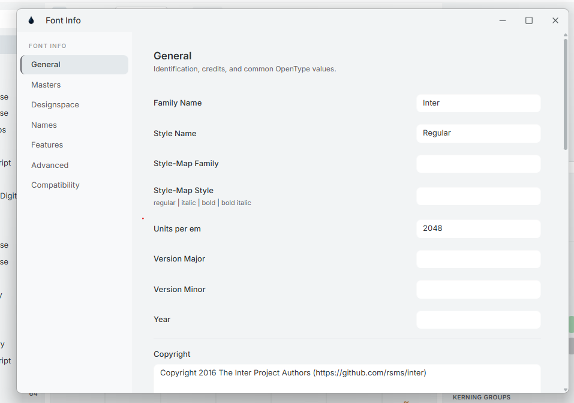

General
Font Info is the window for everything that applies to the whole font. Its General tab holds identification, credits and common OpenType values.

Opening Font Info
- Press Ctrl I / ⌘ I, choose File → Font Info, click the Info icon in the title bar, or run “Font Info” from the command palette (Ctrl Shift P).
- Each open font gets its own Font Info window. Asking again brings the existing window to the front; it closes when you close that font.
The tabs
The sidebar lists General, Masters, Designspace, Names, Features, Advanced and Compatibility. Two appear only when they apply:
- Designspace — for source projects whose axes can be edited (.ink, .ufo, .glyphs, .designspace).
- Compatibility — when the font has two or more masters.
How edits are saved
- Text and number fields save when you leave the field or press Enter. Multi-line fields save when you leave them, so Enter adds a new line.
- Checkboxes, menus and toggles save immediately.
- Emptying a field unsets it, so Ink falls back to the value it would derive.
- Changes made in another window show up here automatically.
- Font Info has no undo of its own. Every change is captured by Time Machine, which can restore it.
Identification
| Family Name | The family, e.g. “Inter”. Exported as name ID 1 and used to build the full name, PostScript name and other derived names. |
| Style Name | The style, e.g. “Bold Italic” (name ID 2; empty exports as “Regular”). Ink reads it to set the italic and bold style bits: any name containing “italic” or “oblique” is italic, and any containing “bold” is bold. |
| Style-Map Family | The family name used for four-style (R / I / B / BI) style linking. |
| Style-Map Style | One of regular, italic, bold or bold italic. |
| Units per em | The size of the em square, e.g. 1000 or 2048. It cannot be left empty. |
| Version Major · Version Minor | The font's version number. |
| Year | The release year. |
Credits
| Copyright | Copyright notice (name ID 0). |
| Trademark | Trademark notice (name ID 7). |
| Designer · Designer URL | Exported as name IDs 9 and 12. |
| Manufacturer · Manufacturer URL | Exported as name IDs 8 and 11. |
| License · License URL | Licence description and link. |
If you edit the Designer, Manufacturer or URL rows on the Names tab, those OpenType-specific values take precedence over the fields here.
OS/2 values
| OS/2 Weight Class | usWeightClass, 100–900: 100 Thin, 200 Extra-light, 300 Light, 400 Regular, 500 Medium, 600 Semi-bold, 700 Bold, 800 Extra-bold, 900 Black. It also suggests the PostScript weight name. |
| OS/2 Width Class | usWidthClass, 1 (Ultra-condensed) to 9 (Ultra-expanded); 5 is normal. |
| OS/2 Vendor ID | Your four-character vendor tag. Shorter tags are padded with spaces on export. |
Notes and references
| Note | Free-form notes about the font. |
| Sample Text | Sample string shipped in the font (name ID 19). |
| Tracing reference font | An OTF or TTF drawn behind your outline as a tracing template. Select… picks a file, Clear goes back to the default — Ink's bundled Inter. |
| Guidelines (JSON) | Font-wide guidelines as JSON text. |
Grid
These two values control how coordinates are rounded in this font — not the grid you see on the canvas, which adapts to the zoom level on its own.
| Grid spacing | The rounding step. Default 1 (whole units). 0 turns off all rounding for this font. |
| Grid subdivision | Coordinates round to spacing ÷ subdivision. Default 1; the minimum is 1. |
An empty or invalid entry reverts to the current value. Rounding while you draw is switched by Round when editing in Settings → Editor.
A compiled font opened directly is edited in memory only — Font Info changes are not written back to the file. Save it as an .ink project to keep your edits, or export a new font.
References
- name — Naming Table · name IDs 0–25
- head — Font Header Table · unitsPerEm
- OS/2 — OS/2 and Windows Metrics Table · usWeightClass, usWidthClass, achVendID